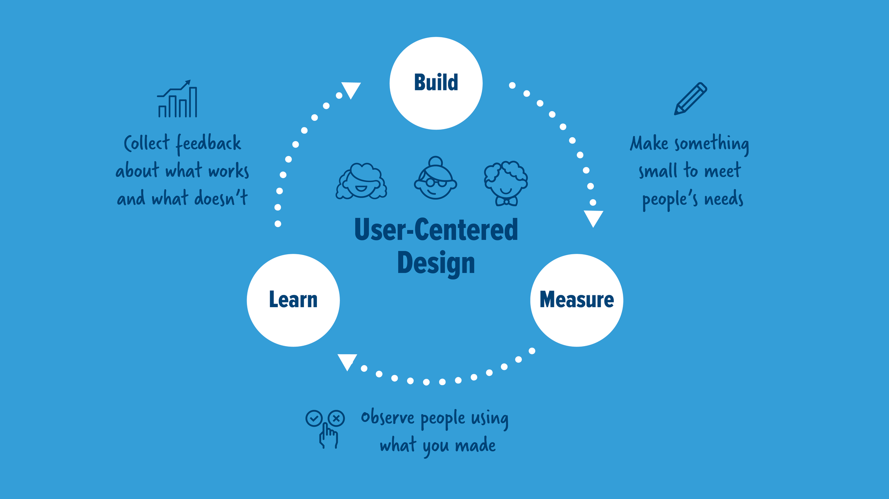
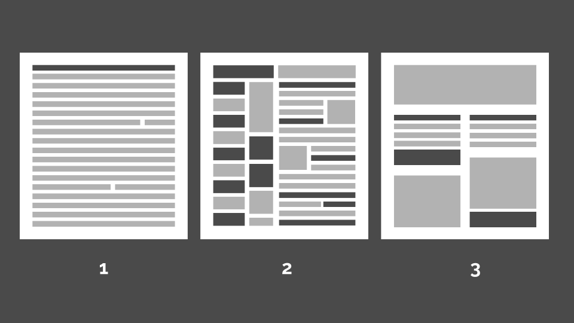

Form Design for Government
Rachel Edelman
Forms are one of the most common ways residents interact with their government, but they often fall short.
A well designed form can reduce errors, increase completion rates and improve customer satisfaction.
We'll cover principles and techniques relating to visual design, user-centered thinking, plain language writing, and more. You'll learn to make great documents from scratch, or revise existing materials to create forms that are easy to fill out and get you the information you need
Form is a pretty general term, but here we'll be using it to mean something that you fill out in order to receive a service, or engage in a transaction. That could mean something as simple as RSVPing to an event, or something more complex like filling out an application for social services.
This article is based on a form and survey design workshop I gave with Jessica Cole to employees of the Kansas City, Missouri city government. You can find the slides from that presentaton which include Jessica's excellent section on survey design, here.
Content: What should you put in your form?
User-Centered Design
Everything we’re going to talk about today is going to be through the lens of a philosophy called user-centered design. In this context, we're using “user” to mean the person filling out the form, although you’ll also have internal users, who process it. Many cities talk about providing customer service to their residents. User-centered design is one way of delivering great services to residents.
The user-centered design process is a cycle:
- Build something small that meets people’s needs. It won’t be perfect, because nothing is on the first go round, but it should let people achieve their basic goal.
- Measure. Observe people using it. We’ll cover specific strategies for this in the testing section.
- Learn. Collect feedback about what worked and what didn’t
- Start the cycle over again by building a second version based on the feedback
How might you apply this process to desiging a form? What's the most basic version that you can put in people's hands? What metrics will you use to mesasure its success?
Staying User-Centered
There are several ways you can make sure you're focusing on what the user needs.
Be an advocate for user needs
You probably won't encounter anyone who is against serving users. But what you will encounter is inertia and competing priorities. If something has always been done a certain way, it can be hard to change. Users usually aren't in the room when decisions are being made. Their voice can be lost. Someone who is willing to be a champion for user needs can make a big difference.
Think about it from an outside perspective
You work for the organization making the form, so you understand how things work internally. You’re probably comfortable thinking in terms of organizational structure. You know that question 12 is on there because department A requires it, and that question 9 is repeated on two pages because one copy goes to department B and one goes to Dept C. Residents don’t necessarily think in these terms. When you’re created outward facing materials, you need to keep an outside perspective in mind.
Take the burden off the user
How can you coordinate internally to take some burden off the user? Maybe Departments B and C can share data amongst themselves so the user doesn’t have to answer a question twice. Maybe you have ways of getting data without making people fill out a form at all. Do what you can to take burdensome tasks off of users. This will make users happier which is a goal in and of itself, but happy users are also less likely to make sloppy errors, or abandon transactions altogether.
Every Question Has a Cost
At its most basic, a form is a series of questions. Each question carries a cost. You'll need to balance that cost against your need to get information.
There is a cost to you, as you have to process and store every answer. There is also a cost to the user. As part of my work for the Kansas City Health Department, I shadowed a parent going through the intake process to get her son immunized. Afterwards, she told me the hardest part was trying to fill out the intake paperwork while her two kids ran in circles around the waiting room. In between answering questions about insurance status and immunization history, she had to broker negotiations about custody of a toy truck.
Every time you add a question to a form, I want you to imagine the user filling it out with one hand, while using the other to break up a fight between toddlers.
Question Protocol
So how do you reduce the number of questions you’re asking? One tool you can use is a question protocol. This is a procedure you can use to vet each field on your form. Caroline Jarret is a forms and surveys specialist who has developed a great one.
She presents four questions that you should be able to answer about each field on your form. If you don’t have a good answer for each one, you should remove the field. The answers to these questions will also help you do that, if you face pushback.
Here's my variation on Caroline's protocol:
-
Who within your organization uses the answer?
Track down specific people in specific departments who say they need this information. -
What do they use it for?
Again, you need a current and specific answer for how the information is being used. -
Is the answer required or optional?
Will every user need to answer this question, or just some of them? Is it okay to let people skip this question if it means they'll be more likely to complete the form? -
What level of fidelity is required?
How specific do you need the answer to be? For example, a form might ask for a date of birth. Could age be subsituted for bithdate? An age range? What about a checkbox verifying that someone is over 18?
What information to give
You're asking questions, but you can also give information in the form of instructions and explanatory text. Again, this is about centering your design around the user's needs. Think about what someone who doesn’t know what you know would need.
Why are you asking that?
If you’re asking for sensitive or unexpected information, be clear about why it’s needed, and what will happen to the data. This will reassure the user that you're asking for a legitimate reason, and will protect their privacy.
What is required?
Make it clear what questions are required to submit the form, vs merely optional.
What do I need before I start?
If the user needs to take steps before filling out and submitting the form list them upfront. These could be gathering documents, receiving a case number, or submitting a different form. You don’t want someone to abandon a form because they didn’t have what they needed to finish it.
What happens next?
Be clear about timeline and additional steps after submitting. Should they wait for a confirmation letter? Will they need to store a case number? Should they call someone if something doesn’t happen in a certain time period? It’s not always possible to give an exact timeline, but filling out a form can feel like shouting into a void. You can help.
Plain Language
Using plain language is one of the most important things you can do to improve your forms. The Plain Language Action and Information Network (PLAIN) defines plain language as writing that allows readers to:
- Find what they need;
- Understand what they find; and
- Use what they find to meet their needs.
Use simple words
You want to be professional and authoritative. That doesn’t mean you have to use big words, if small ones will do.
Use short sentences
People generally find shorter sentences easier to understand. You should stick to one idea per sentence. If you’re adding parentheses, or semicolons, or going over 25 words, reconsider.
Write naturally
Read your writing out loud to make sure it sounds like something a human being would say. Think about what kind of tone do you want, and be intentional about it.
Talk directly to the reader
In most cases, it’s perfectly fine to say “you” and “your”. Don't make the reader guess who you're talking about.
Don’t use jargon or legalese
Legal language will be hard to remove, so you must persevere. Some things need to be written by lawyers, but most things don’t. Use the lessons of the question protocol. Who says this language needs to be used? What specific regulation applies? What will happen if this language is not used?
Avoid the passive voice
Use active language.
Plain Language Example
This is an example from a parade permit application:
“The permit for the procession or parade shall be in the possession of the applicant or a representative of the applicant during the parade or procession and shall be presented, on request, to any officer of the police department at any time prior to or during the parade or procession.”
How could this sentence be improved? We can convey the same information using the active voice, simple sentences, and natural language:
“Bring the permit to the parade. A police officer may ask for it at any time before or during the event.”
Try it yourself on this paragraph:
“Submit with the application a statement on Sponsor Organization letterhead attesting to the manner in which cleanup along the entire route will be accomplished (also acceptable is an executed copy of your cleanup agreement with a third party).”
Visual Design: How Should It Look?
Why is visual design important?
Usability
Design isn’t just about making things look nice. The choices you make while designing impact how easy to use your product (the thing you’re making) is. Poor design makes people make mistakes, it makes them unhappy, and it can make them give up and not want to use what you’ve made.
Trust
While design isn’t just about making things look nice, that is part of it. It can be about the appearance of professionalism and trustworthiness. You’re asking people for time, information, maybe even money. You need to appear trustworthy.
Set expectations
Lastly, you can use visual design to set expectations. Maybe you’ve done everything we talked about in the content section: simplified your language, streamlined your questions. Your content is now easy to understand. But you still have to make it look easy, or people might give up before they start
Hierarchy
One of the most important principles in design, hierarchy. You might be familiar with the word in the context of a business, where the boss is at the top of the org chart, and under them are VPs, and then managers, and then workers.
Visual hierarchy is the same idea, but it’s about presenting elements on a page in terms of how important they are. Elements can include text, pictures, buttons, any piece of content on the page.
Your goal in designing is to have a strong hierarchy, where the more important content things look more important. Your job is to guide the user through what they should be looking at, in what order.
You can't assume that people will read everything you put on a page. Organize your content into logical chunks with clear headers. This will help readers scan for what they're looking for.
These are three examples of pages.
- In the first, we have a weak hierarchy. everything has the same visual weight. Nothing stands out as important. For the user to find what they want, they’ll need to do a lot of work. When people are faced with doing a lot of work, they tend to close the tab.
- In our second example, we have the opposite problem. Instead of everything looking the same style, every single thing looks different. There are too many visual styles. Lots of variation, but no logic. If everything is important, nothing is important. Again, it requires work from the user.
- Strong hierarchy. Important things stand out, and objects are logically grouped.
Ways of Showing Hierarchy
There are many visual techniques you can use to show hierarchy. These may seem obvious, but they can be used to great effect:
- Position
- Borders
- Whitespace
- Color
- Size
- Weight
Typography
Avoid ALL CAPS
Caps are often used for emphasis, but they should be avoided. It's difficult to read, and gives the reader an unpleasant sense of being shouted at. You can emphasize text by weight, size, and position. If people are still making errors that indicate they didn’t read the text, consider that visibility is not the issue.
Don’t center text
Centered text is also harder to read, especially if it's more than a few words. It's safest to stick to left-aligned.
Limit fonts, colors, and type sizes
Different text styles should indicate different hierarchy, and you’ll rarely need more than three. A jumble of many different styles is confusing.
Minimum of 16px for web, 12pt for print
Your form length is dictated by the amount of content, not the size of the paper. Don’t try to squeeze it in!
Line height
Again, no squeezing.
< BAD TYPOGRAPHY EXAMPLE HERE >Visual Design Conclusion
Strong hierarchy, fllow typography guidelines, form follows function.
Delivery: How should you share it?
Paper forms
Pros:
-
Accessible
You don’t need access to computer or phone, or any technical literacy. Everyone knows how to fill it out.
Can be simplest
Fits into existing workflow
If you’re already using a paper form, your staff knows how to handle it. No training or changes to workflow needed. People are used to it.
Cons:
Manual data entry
If the data gathered has to go anywhere (a spreadsheet, a database, a calendar, etc), it has to be manually entered.
No data validation
You’ll only catch errors and omissions when a real person looks at it, at which point it might be too late (ie, forgot to add phone number, no way to contact them).
Hard to update
You have to find and change the original file, print it, distribute it, and get rid of all the out of date ones.
Barriers to access and submit
Users need physical access to the forms (or the ability to print), and then need to mail them or drop them off in person.
More work for user
Users may have to answer questions that aren’t relevant to their particular situation. May have to answer question multiple times if multiple agencies need it.
Fillable PDF
Pros:
Accessible Online
Structured data
Fits into existing workflow/easy transition from paper
Cons:
Difficult to Use
Not available on all devices
PDFs can't easily be filled out on mobile devices or certain browsers. They may also require the user to download special software.
A team at the United States Digital Service illustrates the drawbacks of relying on fillable PDFs:
“There is an online application (the Veterans Online Application, also known as VOA), but less than 10% of applicants are using it. Why? The answer is fairly straightforward: the online application does not open for most users. It is a fillable PDF. The only browser that defaults to Adobe is Internet Explorer. Even if you are using Internet Explorer, you must be using Adobe 8 or 9 for the application to open. If not, you’ll see [an error message].
More than 70% of U.S. Government traffic comes from Chrome, Safari, or Firefox. None of these browsers default to Adobe and that means over 70% of visitors have trouble accessing the healthcare application.”
Web Forms
Pros:
Broadly accessible
Accessible at any time/place via the internet
Easy to experiment
Low cost to try something new, or change things
Customizable with logic
Use branching logic to show people only the questions relevant to them.
Analytics
You can use analytics to see exactly where people are making errors, and where people are dropping off.
Structured data
You can easily output data to CSV or spreadsheet, and import to other programs.
Data validation
You can ensure that no form is submitted without all of the required fields answers. You can also validate the answers in the moment, for example making sure a phone number has ten digits.
Less constraints
Web forms offer the greatest flexibility in structure and content.
Cons:
Requires internet access/technical literacy
Most forms use simple, common patters, but not everyone has internet access/technical literacy. Ineveitably, some people (low technical literacy, limited computer access) won’t be comfortable with them.
Requires new workflow/skills for staff
Requires new workflow/skills for staff. Requires people on staff who know how to set up and maintain it. May require changes to workflow.
Formats Conclusion
Some benefits to paper. Approach fillable PDFs with caution. Move towards the web.
Testing: How do I know it works?
We talked again and again about the importance of making sure that users understand your content. The way to make sure that’s happening is through testing.
< RETURNS GRAPH >I cannot overstate the benefits of testing. Even if you have zero budget and no support from your boss, you can still conduct the simplest of tests, the hallway test. The idea of a hallway test is that you literally step out of your office and grab the first person you see in the hallway and make them do a usability test with you. Really though, you’re just looking for a person who hasn’t been working on the project and get a fresh set of eyes. It can be a person in another department, a friend, a family member.
Basics of Usability Testing
Set the scenario
Walk-through
Ask your tester to fill out the form.
Narration
The most important thing you’ll ask your tester to do is narrate their thought process out loud. What do they think each question is asking? Do any thoughts or feelings come up? If you have explanatory text, ask them to tell you what it’s saying in their own words.
Take a back seat
What you want to be doing during this test is as little as possible. If they skip something, take note but don’t bring it up until the end. If they get something wrong, don’t correct them. The fact is, they can’t really get anything wrong. The test isn’t of them, it’s of the form. Once you’ve given your initial instructions, try not to say anything at all, unless you’re reminding the tester to think out loud.
Observation
What you should be doing instead is observing. Do they hesitate at a certain question? Do they misinterpret a sentence? Do they accidentally skip a question, or go in an order you didn’t expect? You can ask direct questions at the end, but you might notice inconsistencies between what they say, and what they actually did. Observation is invaluable.
| Form checklist | Yes? |
|---|---|
| Content | |
Have you asked yourself the following questions for each field?:
|
|
| If you’re asking for sensitive or unexpected information, have you explained why? | |
| If there are any documents or information that needs to be gathered before starting the form are they listed at the top? | |
| Have you included a timeline for what happens after the form is submitted? | |
| Language | |
| Have you checked the reading level and made sure it’s appropriate? | |
| Is it written in the active voice? | |
| Have you removed unnecessary jargon and defined specialized terms? | |
| Are you using simple, common words? | |
| Are you using short, clear sentences? | |
| Have you read it out loud to ensure it sounds natural? | |
| Have you tested the form with another person to make sure they understand it? | |
| Visual Design | |
| Do the elements on your page have a clear hierarchy? | |
| Is your font size at least 12pt (print), or 16px (web)? | |
| Have you removed anything in ALL CAPS? | |
Resources
these are resources
-
Redesigning election forms for overseas citizens
This summary includes before and after examples of a form redesign covering both content and design. It includes a link to an in-depth report covering the process.
-
The Question Protocol: How to Make Sure Every Form Field Is Necessary
How to use a question protocol to ensure your forms only cover the necessary questions.
-
Paper, Cut: The Bleeding Edge of Government Forms
Very in-depth read on the current state of government forms and potential for the future. Includes a helpful list of resources at the end.
-
Designing Usable Forms: Success Guaranteed (PDF)
A comprehensive paper on how to improve form usability and reduce errors.
-
Hemingway App
A free, simple tool you can use to check the reading level and complexity of your text.
-
Writing for GOV.UK
This is the style guide for the UK’s digital services department. It includes lots of great, concrete recommendations that are helpful to any government publication.
-
Plain Language: Accessibility for Content
This slide deck goes in depth on how to write simply, so readers will understand.
-
Saving Good Causes from Bad Design
This recording of a webinar by former Code for America design Molly McLeod is a great introduction to visual design for beginners.
-
Design for Non-Designers
A slide deck with notes from another Code for America Designer (me!) covering the basics of web design.
-
U.S. Web Design Standards
If you are creating web forms from scratch, these web standards created for the federal government are a great resource. You can copy the code or just use the documentation as inspiration.